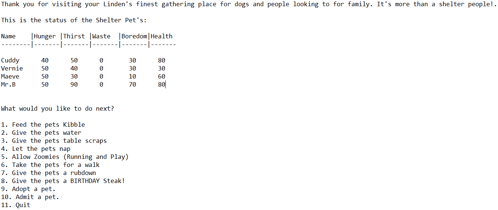

Virtual Pet Amok

- Java
- Test Driven Development
- Object Orientation Programming
- Gradle
- Git Bash
Process oriented and reliable Full-Stack Software Developer with a strong knowledge of Java, database and front-end languages. Outstanding work ethic with a demonstrated ability to plan, design and program clean and efficient code using agile methodologies. Able to successfully work independently, remotely as well as within a team setting.
Java • Spring • Hibernate • JPA • JavaScript • MVC • HTML5 • CSS3 • Flexbox • Grid • TDD • Agile (Scrum) • Object Oriented Programming (OOP) • AJAX • JSON • Restful APIs • Responsive Design / Mobile • Structured Query Language (SQL) • Relational Databases • Source Control / Git